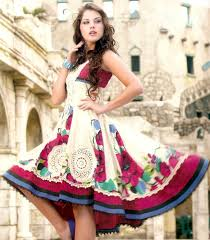
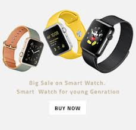

Online Shopping
Online shopping is a form of electronic commerce which allows consumers to directly buy goods or services from a seller over the Internet using a web browser. Consumers find a product of interest by visiting the website of the retailer directly or by searching among alternative vendors using a shopping search engine, which displays the same product's availability and pricing at different e-retailers. As of 2016, customers can shop online using a range of different computers and devices, including desktop computers, laptops, tablet computers and smartphones.Welcome To Online World
History of online shopping
 An online shop evokes the physical analogy of buying products or services at a regular "bricks-and-mortar" retailer or shopping center; the process is called business-to-consumer (B2C) online shopping. When an online store is set up to enable businesses to buy from another businesses, the process is called business-to-business (B2B) online shopping. A typical online store enables the customer to browse the firm's range of products and services, view photos or images of the products, along with information about the product specifications, features and prices.
Online stores typically enable shoppers to use "search" features to find specific models, brands or items. Online customers must have access to the Internet and a valid method of payment in order to complete a transaction, such as a credit card, an Interac-enabled debit card, or a service such as PayPal. For physical products (e.g., paperback books or clothes), the e-tailer ships the products to the customer; for digital products, such as digital audio files of songs or software, the e-tailer typically sends the file to the customer over the Internet. The largest of these online retailing corporations are Alibaba, Amazon.com, and eBay.The growth of the internet as a secure shopping channel has developed since 1994, with the first sales of Sting album 'Ten Summoner's Tales'.[2] Wine, chocolates and flowers soon followed and were among the pioneering retail categories which fueled the growth of online shopping. Researchers found that having products that are appropriate for e-commerce was a key indicator of Internet success.[3] Many of these products did well as they are generic products which shoppers didn't need to touch and feel in order to buy. But also importantly in the early days there were few shoppers online and they were from a narrow segment: affluent, male, 30+. Online shopping has come along way since these early days and -in the UK- accounts for significant percents (depending on product category as percentages can vary).
An online shop evokes the physical analogy of buying products or services at a regular "bricks-and-mortar" retailer or shopping center; the process is called business-to-consumer (B2C) online shopping. When an online store is set up to enable businesses to buy from another businesses, the process is called business-to-business (B2B) online shopping. A typical online store enables the customer to browse the firm's range of products and services, view photos or images of the products, along with information about the product specifications, features and prices.
Online stores typically enable shoppers to use "search" features to find specific models, brands or items. Online customers must have access to the Internet and a valid method of payment in order to complete a transaction, such as a credit card, an Interac-enabled debit card, or a service such as PayPal. For physical products (e.g., paperback books or clothes), the e-tailer ships the products to the customer; for digital products, such as digital audio files of songs or software, the e-tailer typically sends the file to the customer over the Internet. The largest of these online retailing corporations are Alibaba, Amazon.com, and eBay.The growth of the internet as a secure shopping channel has developed since 1994, with the first sales of Sting album 'Ten Summoner's Tales'.[2] Wine, chocolates and flowers soon followed and were among the pioneering retail categories which fueled the growth of online shopping. Researchers found that having products that are appropriate for e-commerce was a key indicator of Internet success.[3] Many of these products did well as they are generic products which shoppers didn't need to touch and feel in order to buy. But also importantly in the early days there were few shoppers online and they were from a narrow segment: affluent, male, 30+. Online shopping has come along way since these early days and -in the UK- accounts for significant percents (depending on product category as percentages can vary).
Online shopping is a form of electronic commerce which allows consumers to directly buy goods or services from a seller over the Internet using a web browser. Consumers find a product of interest by visiting the website of the retailer directly or by searching among alternative vendors using a shopping search engine, which displays the same product's availability and pricing at different e-retailers. As of 2016, customers can shop online using a range of different computers and devices, including desktop computers, laptops, tablet computers and smartphones.
Online shopping is a form of electronic commerce which allows consumers to directly buy goods or services from a seller over the Internet using a web browser. Consumers find a product of interest by visiting the website of the retailer directly or by searching among alternative vendors using a shopping search engine, which displays the same product's availability and pricing at different e-retailers. As of 2016, customers can shop online using a range of different computers and devices, including desktop computers, laptops, tablet computers and smartphones.
The growth of the internet as a secure shopping channel has developed since 1994, with the first sales of Sting album 'Ten Summoner's Tales'.[2] Wine, chocolates and flowers soon followed and were among the pioneering retail categories which fueled the growth of online shopping.
The growth of the internet as a secure shopping channel has developed since 1994, with the first sales of Sting album 'Ten Summoner's Tales'.[2] Wine, chocolates and flowers soon followed and were among the pioneering retail categories which fueled the growth of online shopping.
The growth of the internet as a secure shopping channel has developed since 1994, with the first sales of Sting album 'Ten Summoner's Tales'.[2] Wine, chocolates and flowers soon followed and were among the pioneering retail categories which fueled the growth of online shopping.